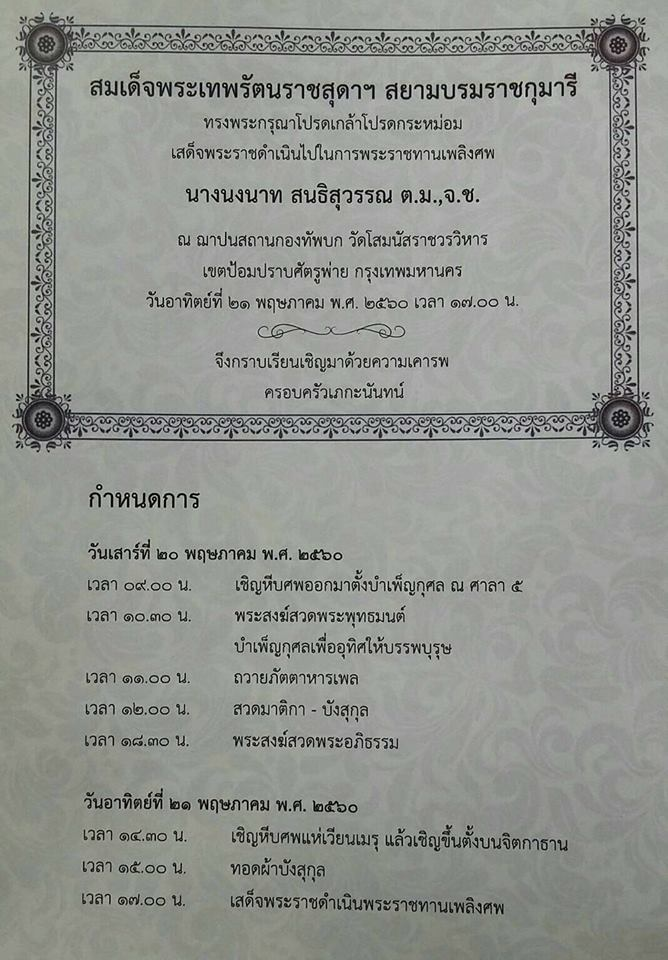

 ข่าว ดูดวง เพลง Joox หวย ผลบอล ดูทีวีออนไลน์ เกม แนะนำ ข่าว ข่าวบันเทิง รถยนต์ ไอที เกมส์ กีฬา ผู้ชาย ผู้หญิง สุขภาพ เที่ยว-กิน ดูดวง Podcasts เพลง wetv อื่นๆ บ้าน วัยรุ่น หนัง / ละคร การเงิน คลิป ดูทีวี แกลเลอรี How To กูรู-รอบรู้ อ่านการ์ตูน เรียนออนไลน์ พจนานุกรม สารบัญเว็บไทย โมชิ โมชิ Sanook77 ຂ່າວລາວ ดูดวง ดวงแม่น ดูดวงความรัก ทํานายทายทัก หมอดัง ดวงเด่น ความเชื่อ ดูดวงทั้งหมด Webboard ดูดวงปี 2564
ดอกไม้ประจำ 12 ราศี ความหมายของดอกไม้มงคลในประเทศไทย
ความคิดเห็น 10 ก ก Add @Sanook.comสนับสนุนเนื้อหา
ดอกไม้ เป็นพืชสวยงาม และแฝงความหมายไว้ในตัวเอง การให้ ดอกไม้ แก้ผู้อื่นก็เช่นกัน ตามประเพณีไทยและความเชื่อตั้งแต่อดีต มีความเชื่อเกี่ยวกับ ความหมายของดอกไม้ แต่ละชนิดแตกต่างกัน ความหมายของดอกไม้อาจรับผลกระทบมาจากเหตุการณ์ หรือ วันสำคัญ ต่างๆทั้งในประเทศไทยและต่างประเทศ วันนี้ Sanook! Horoscope จะมาแนะนำถึงความหมายของดอกไม้แต่ละประเภทว่ามีความหมายอย่างไร
ดอกไม้
กุหลาบ วาเลนไทน์
ความหมายของสีดอกกุหลาบ
ดอกกุหลาบสีแดง คือการบ่งบอกถึงความรัก การให้ที่ลึกซึ้ง เป็นความหมายที่คนทั้งโลกเข้าใจตรงกัน มักมอบให้กับคนที่รักกันเป็นสื่อทางใจ เพราะสีแดงนั้นเปรียบเสมือนสีของหัวใจ ดอกกุกลาบสีส้ม คือการแสดงความอบอุ่น แสดงถึงความรักเหมือนสีแดง แต่เป็นความรักที่รู้สึกนุ่มและอบอุ่น ดอกกุหลาบสีชมพู คือการแสดงความรักแบบโรแมนติก แต่ไม่ใช่ความรักที่ลึกซึ้งมากนัก ดอกกุหลาบสีเหลือง คือสัญลักษณ์ของมิตรภาพและความห่วงใยที่มีให้กัน นอกจากนั้นยังหมายถึงสุขภาพได้อีกด้วย ดอกกุหลาบสีขาว คือสัญลักษณ์ของความรักที่บริสุทธิ์ ไม่หวังผลใดๆ ตอบแทน เหมาะสำหรับมอบให้กับผู้มีพระคุณ และอาวุโสกว่าดอกลิลลี่
ความหมายของสีดอกลิลลี่
ดอกลิลลี่สีขาว คือความรักที่บริสุทธิ์ อ่อนหวานและจริงใจ เหมาะที่จะใช้ในโอกาสแสดงความยินดีตามเหตุการณ์ต่างๆ ดอกลิลลี่สีชมพู คือตัวแทนของความอ่อนหวาน ความรักที่ค้นเจอ ความรักที่ดีที่สุดที่ตามหามานาน ดอกลิลลี่สีส้ม คือสีของความน่ารักสดใส สุขใจ มักใช้มอบให้กับเพื่อนและครอบครัว ดอกลิลลี่สีเหลือง คือสัญลักษณ์ของความมั่นคง คุ้มครอง ความหวังและความห่วงใย มักพบเห็นบ่อยๆ ตามโรงพยาบาลดอกคาเน่ชั่นแดง
ความหมายของสีดอกคาเนชั่น
ดอกคาเนชั่นสีแดง คือสีแห่งความรัก เป็นการบอกความรู้สึกว่ารักให้กับผู้ที่มอบให้ ดอกคาเนชั่นสีชมพู คือตัวแทนของความรักที่กำลังเบ่งบานเป็นสีชมพู ดอกคาเนชั่นสีเหลือง คือตัวแทนของการอยากให้ง้อ เพราะสีเหลืองของดอกคาเนชั่นสื่อความหมายถึงการดูหมิ่นเหยียดหยาม ดอกคาเนชั่นสีขาว คือสีที่มักใช้เพื่อแสดงความยินดี ชื่นชม และแทนการขอบคุณดอกเบญจมาศ
ความหมายของสีดอกเบญจมาศ
ดอกเบญจมาศสีแดง คือสีแห่งการแสดงถึงความรักที่มีให้ ดอกเบญจมาศสีเหลือง คือตัวแทนของโชค มักมอบให้กับผู้ใหญ่ที่มีอายุมากกว่า เพื่อแสดงถึงความโชคดี ดอกเบญจมาศสีขาว คือความทรงเกียรติ ความซื้อสัตย์ จงรักภักดิ์ดี มักมอบให้กับเจ้านายหรือผู้มีพระคุณ
ความหมายของดอกไม้ตามความเชื่อคนไทย
ดอกมะลิ หมายถึงคนที่บูชา คนที่รัก ผู้สูงส่ง ดอกบัว หมายถึงความศรัทธา ความน่ายกย่อง ดอกไอวี่ หมายถึงเพื่อน ดอกทานตะวัน หมายถึงความมั่นคงดั่ง ดวง อาทิตย์ ดอกหญ้า หมายถึงความรักที่ไม่ผูกมัด ดอกกล้วยไม้ หมายถึงความคิดถึง ซ่อนกลิ่น หมายถึงการแอบรัก ดอกกระถิน หมายถึงความมั่นคง ดอกโรสแมรี่ หมายถึงความทรงจำ ดอกซ่อนกลิ่น หมายถึงการแอบรัก ดอกทิวลิป หมายถึงความรักที่ฉาบฉวยดอกไม้ประจำราศีทั้ง 12 ราศี
รู้หรือไม่ว่านอกจากเราจะมีสัญลักษณ์ประจำตัวของทั้ง 12 ราศี ที่ต่างกันออกไปแล้ว เรายังมีดอกไม้ที่เสมือนเป็นสัญลักษณ์ประจำตัวแทน 12 ราศีด้วยมาดูกันสิว่าราศีไหน มี ดอกไม้ประจำราศี เป็นดอกไม้ชนิดใดบ้าง
ดอกเบญจมาศ
ดอกเบญจมาศ เป็นดอกไม้ประจำ ราศีมังกร
เบญจมาศเป็นดอกไม้ตัวแทนชนชั้นสูง ราชวงศ์ หรือกษัตริย์ ทนนานและมีพลังฉลาดแฝงอยู่มากเป็นพิเศษ คนราศีมังกรจึงเต็มไปด้วยความฉลาด มีความคิดวางแผนเป็นขั้นเป็นตอน เป็นดอกไม้แห่งความสำเร็จจึงมักจะมีผู้ให้การช่วยเหลือหรืออุปถัมภ์ตลอด
คนราศีมังกรมักเป็นนักวางแผนที่ดี มีการวางแผนด้านการเงินเป็นเลิศ จึงเหมาะกับการลงทุนด้านอสังหาริมทรัพย์ อาชีพที่เหมาะคือ วิศวกร สถาปนิก ผู้ผลิตรายการสื่อต่าง ๆ งานเกี่ยวกับการเงิน ด้านความรักเป็นคนที่จริงใจและซื่อสัตย์ เพราะคนราศีมังกรจะเป็นพวกหัวอนุรักษ์นิยมเกี่ยวกับประเพณีและความเชื่อมาก
ดอกกล้วยไม้
ดอกกล้วยไม้ เป็นดอกไม้ประจำ ราศีกุมภ์
กล้วยไม้เป็นไม้ที่ต้องการการดูแลอย่างดี เป็นตัวแทนของการเอาใจใส่ดูแลอย่างลึกซึ้ง กล้วยไม้มักจะถูกจัดไว้ในที่ที่โดดเด่นโดยมี ดอกไม้อื่นแวดล้อม ชาวราศีกุมภ์จึงเต็มไปด้วยการเอื้ออาทรผู้คนรอบข้าง มีความฉลาดในตัวเอง รักธรรมชาติ ใจกว้าง
ชาวราศีกุมภ์จะชอบสิ่งของไฮเทค จึงเหมาะกับงานที่เกี่ยวข้องกับเทคโนโลยี โทรทัศน์ นักเขียน ศิลปิน อีกด้านก็สนใจเรื่องศาสนา ประวัติศาสตร์ และของโบราณ เขาสามารถผสมผสานศาสตร์เก่าและใหม่เข้ากันได้อย่างดี ด้านความรักจะชอบยึดมั่นในคำสัญญา ซื่อสัตย์และจงรักภักดีมาก
ดอกคาร์เนชั่นแดง
ดอกคาร์เนชั่นแดง เป็นดอกไม้ประจำ ราศีมีน
ดอกคาร์เนชั่นสีแดงเป็นตัวแทนของศิลปิน เป็นดอกไม้แห่งความฝันอันลึกลับ มีความคิดจินตนาการสูง อาชีพที่เหมาะสมจะเป็นพวกนักแสดง นักเขียน จิตกร นักแต่ง เพลง นักวิจารณ์อาหาร นักสังคมสงเคราะห์
คนราศีมีนมีอารมณ์ปรวนแปรง่าย ด้านความรักก็มักจะอ่อนไหว อารมณ์รักปรวนแปรแต่ก็เขาก็เป็นคนมีเสน่ห์เร้าใจใช่เล่น มีความชอบส่วนตัวในเรื่องศาสนา และมีสัมผัสพิเศษด้านจิตวิญญาณ หรือ มีสัมผัสที่ 6
ดอกลิลลี่
ดอกลิลลี่ เป็นดอกไม้ประจำ ราศีเมษ
ลิลลี่เป็นดอกไม้แห่งความโดดเด่นและการเป็นผู้นำ นับเป็นดอกไม้อีกชนิดหนึ่งที่มักจะถูกวางไว้ในจุดที่สูงส่ง แต่ถึงแม้จะอยู่ในจุดที่ไม่สูงนักแต่ความเด่นของดอกลิลลี่ก็มักจะเป็นจุดสนใจเสมอ เหมือนกับคนราศีเมษที่จะมีความโดดเด่นกว่าคนอื่น
นักบริหารธุรกิจ นักแสดง นายทหารชั้นผู้ใหญ่ หรือนักประดิษฐ์คิดค้นต่าง ๆ เป็นอาชีพที่เหมาะสมกับคนราศีเมษ ด้านความรักเป็นคนโรแมนติก ชอบการครอบครองและเป็นเจ้าเข้าเจ้าของ
ดอกลีลาวดี
ดอกลีลาวดี เป็นดอกไม้ประจำ ราศีพฤษภ
บุคลิกของดอกลีลาวดีคือการรอคอยสิ่งที่ดีที่สุดสำหรับตัวเอง มีการคิดและวางแผนระยะยาวอย่างรอบคอบและสุขุม รักสงบและมองโลกในแง่บวก จึงเป็นคนโกรธยากและมีความจำเป็นเลิศ
คนราศีพฤษภจะใช้จ่ายอย่างมีเหตุผลและเป็นนักลงทุนที่ดี เหมาะที่จะทำอาชีพแพทย์ สถาปนิก วิศวกร โบรกเกอร์หุ้น มัณฑนากร เขาเป็นพวกชอบความงามตามธรรมชาติและมีสัมผัสพิเศษในเรื่องปรากฏการณ์ทางธรรมชาติ ส่วนเรื่องความรักจะเป็นคนรักษาสัญญา เห็นอกเห็นใจและปกป้องคู่รักดี
ดอกเล็บมือนาง
ดอกเล็บมือนาง เป็นดอกไม้ประจำ ราศีมิถุน
เล็บมือนางเป็นดอกไม้ที่มีความงามเฉพาะตัว มีเสน่ห์แบบง่าย ๆ คนราศีนี้จึงมีความคิดเปิดกว้างและยืดหยุ่นสูง อาชีพที่เด่นและเหมาะที่สุดคือการเป็นนักหนังสือพิมพ์ นักดนตรี ศัลยแพทย์ ช่างภาพ นักกวีและงานที่เกี่ยวกับศิลปะทุกชนิด
แต่คนราศีมิถุนเป็นพวกรสนิยมสูงรายได้ต่ำ จึงมักจะสร้างหนี้สินล้นพ้นตัวอยู่บ่อยครั้ง ด้านความรักเป็นคนอ่อนไหวง่าย ชอบหว่านเสน่ห์และเจ้าชู้ เนื่องจากชอบความรักแบบตื่นเต้นอยู่ตลอดเวลา
ดอกบัว
ดอกบัว เป็นดอกไม้ประจำ ราศีกรกฎ
ดอกบัวจัดเป็นดอกไม้แสนสวย อ่อนหวานและสงบ เรียบร้อย เป็นระเบียบ แต่ก็มักจะจมปลักอยู่กับความฝันอันสวยงามที่วาดขึ้นโดยไม่ยอมตื่น ขึ้นมาพบกับความจริงของชีวิต และมักจะคาดหวังสูง ให้ความใส่ใจในศักดิ์ศรีแห่งความเป็นมนุษย์
คนราศีกรกฎเป็นคนไม่ชอบความฟุ่มเฟือยนัก แต่หากเป็นเรื่องของการตกแต่งบ้านชาวดอกบัวจะยอมทุ่มไม่อั้น อาชีพที่เหมาะสมคือ นักจิตวิทยา นักลงทุนในตลาดหุ้น หรืองานที่ช่วยประสานงานโครงการต่าง ๆ ด้านความรักเป็นคนโรแมนติก รักคนยาก แต่ถ้าลองได้รักแล้วก็จะซื่อสัตย์มาก ชอบความรักแบบไม่หวือหวาโลดโผน
ดอกทานตะวัน
ดอกทานตะวัน เป็นดอกไม้ประจำ ราศีสิงห์
ดอกทานตะวันจะเต็มไปด้วยความเป็นมิตร ร่าเริง สนุกสนาน ชาวราศีสิงห์ยังเป็นคนไม่เรื่องมาก ไม่ชอบเรียกร้องความสนใจจากใคร เพราะเขาต้องการแสวงหาความสุขใส่ตัวมากกว่าการต้องระวังตัวท่ามกลางคนหมู่มาก
คนราศีสิงห์เป็นคนรักและชื่นชอบธรรมชาติ แต่ดันชอบของฟุ่มเฟือย อาชีพที่เหมาะสมคือการเป็นนักเขียน ทนายความ นักพูด ส่วนความรักมักจะไม่ชอบการผูกมัด แต่ชอบแสดงออกเรื่องรักและเป็นคนโรแมนติก เรียกว่าเป็นคนเจ้าชู้เล็ก ๆ ก็ว่าได้
ดอกทิวลิป
ดอกทิวลิป เป็นดอกไม้ประจำ ราศีกันย์
ดอกทิวลิปเป็นตัวแทนของความนิ่มนวล และการถูกขัดเกลาอย่างดี ชาวราศีกันย์จึงเป็นคนที่แคร์ความรู้สึกของคนอื่นมากกว่าคนในราศีใด ๆ ชอบเห็นใจผู้อื่น และฉลาดหลักแหลม นอกจากนี้ยังเจ้าระเบียบ และตรงต่อเวลาอย่างมาก
จุดเด่นอีกอย่างที่เป็นที่อิจฉาของใครๆ ของคนราศีกันย์ก็คือเป็นคนที่เก็บเงินเก่ง อาชีพที่เหมาะ คือ แพทย์ บรรณารักษ์ นักวิจารณ์ละครและงานศิลปะ สำหรับเรื่องความรักนั้นจะเต็มไปด้วยความอ่อนหวาน เห็นอกเห็นใจซึ่งกันและกัน
ดอกกุหลาบ
ดอกกุหลาบ เป็นดอกไม้ประจำ ราศีตุลย์
กุหลาบเป็นดอกไม้ที่ประณีต สวยงาม โดดเด่น คนราศีตุลย์จึงมีเสน่ห์ในวงสนทนาเป็นพิเศษ แต่เขาไม่ใช่คนมีระเบียบมากนัก อาจจะรกรุงรังมากกว่าคนอื่นด้วยซ้ำ
ราศีตุลย์อาจเป็น นักดนตรีระดับสูง ผู้เชี่ยวชาญด้านคอมพิวเตอร์กราฟิก มัณฑนากร ผู้เชี่ยวชาญด้านความงาม ที่ปรึกษาด้านภาพลักษณ์ เป็นอาชีพที่เหมาะสมกับคนราศีนี้ที่สุด เขายังเป็นคนมีความเชื่อด้านความรักอย่างลึกซึ้ง ความรักของเขาจึงเต็มไปด้วยความโรแมนติกและอ่อนหวาน แต่ก็ให้อิสระด้านความคิด
ดอกกระบองเพชร
ดอกกระบองเพชร เป็นดอกไม้ประจำ ราศีพิจิก
ดอกกระบองเพชรมีความลึกลับทั้งด้านการเกิดและกลีบดอก ชาวดอกกระบองเพชรจึงมีความลับเยอะ และสิ่งนี้ที่ส่งให้เขามีเสน่ห์น่าค้นหาตลอดเวลา เป็นคนเงียบ ๆ เก็บงำเรื่องราวของตนเองไว้โดยไม่บอกให้ใครรู้ ไม่ชอบออกงานสังคม
ราศีพิจิกเหมาะที่จะทำอาชีพนักโบราณคดี ทนายความ ที่ปรึกษาการลงทุน เภสัชกร ศัลยแพทย์ ด้านความรักจะเป็นคนเข้มงวดมาก เจ้าอารมณ์ แต่ก็มีความอ่อนไหวและลึกซึ้ง เขายังมีเสน่ห์ดึงดูดใจเรื่องบนเตียงเป็นอย่างมาก แถมยังเป็นคู่รักที่เต็มไปด้วยอารมณ์และความปรารถนา
ดอกเบิร์ด ออฟ พาราไดส์
ดอกเบิร์ด ออฟ พาราไดส์ เป็นดอกไม้ประจำ ราศีธนู
ผู้เกิดราศีนี้จะมีความสนุกสนานในชีวิต ชีวิตเต็มไปด้วยความพยายามและทะเยอทะยาน แต่ก็มีอารมณ์ผ่อนคลายและยืดหยุ่น จึงเป็นคนมองโลกในแง่ดี
ราศีธนูเหมาะที่จะเป็นนักเดินทาง นักวาดการ์ตูน นักแสดงตลก นักการเมือง สัตวแพทย์ และนักบิน ด้านความรักจะเป็นคนที่มีอารมณ์อ่อนไหว มีความซื่อสัตย์ในรัก และชอบการผจญภัย.
ดอก ไม้มงคล ของไทย
ไม้มงคล เป็นสิ่งที่อยู่กับความเชื่อของคนไทยมานาน หลายๆบ้านนิยมปลูกดอกไม้มงคลไว้รอบบ้าน และหน้าทางเข้าบ้าน เพราะมีความเชื่อว่าจะส่งผลดีต่อผู้อยู่อาศัย ซึ่งวันนี้ Sanook! Horoscope จะนำเสนอดอกไม้มงคลยอดนิยมทั้ง 5 ชนิดพร้อมความหมายของดอกไม้แต่ละชนิดว่าส่งผลดีแก่ผู้ที่ปลูกอย่างไร
ต้นบานไม่รู้โรย
1. ดอกบานไม่รู้โรย เป็นดอกไม้ที่ช่วยเสริมความแข็งแรงด้านความรัก ให้ผลิบานไม่รู้โรย ทำให้ผู้ที่อยู่อาศัยในบ้านมีความผูกพันต่อกันยาวนาน เชื่อว่าหากบ้านใดปลูกดอกบานไม่รู้โรยแล้ว จะทำให้คู่รักนั้นรักกันยาวนานแสนนาน และไม่ค่อยทะเลาะกัน
ต้นดาวเรือง
2. ดอกดาวเรือง เป็นดอกไม้มงคลที่นิยมปลูกกัน เนื่องด้วยสีของดอกที่เป็นสีเหลืองทอง มีความเชื่อว่าหากบ้านใดปลูกต้นดาวเรืองแล้วมีดอกขึ้น จะทำให้ชีวิตมีแต่เงินทองเข้ามา
ต้นกล้วยไม้
3. กล้วยไม้ เป็นดอกไม้ที่มองดูแล้วรู้สึกร่มเย็น มีความเชื่อว่าหากบ้านใดปลูกกล้วยไม้แล้ว จะทำให้คนในบ้านนั้นมีเมตตา อ่อนโยน เยือกเย็น
ต้นพุด
4. ดอกพุด ดอกไม้สีขาวเป็นดอกที่แสดงถึงความมั่นคง มีสุขภาพดี แข็งแรง สมบูรณ์
ต้นโป๊ยเซียน
5. ดอกโป๊ยเซียน เป็นดอกไม้แห่งโชคลาภ นำพาโชคดีให้กับผู้ปลูก สีของดอกควรเป็นสีเหลืองหรือสีส้ม
ดอกไม้มงคลประจำวันเกิด
ดอกไม้มงคลประจำวันเกิด
คนเกิดวันจันทร์
ดอกไม้ประจำวันเกิดคือดอกไม้ที่มีสีขาวและสีเหลือง เช่น ดอกมะลิ ดอกจำปา ดอกจำปี ดอกกุหลาบขาว เพราะคนเกิดวันจันทร์มักอ่อนไหวง่าย โรแมนติก และอ่อนโยน
คนเกิดวันอังคาร
ดอกไม้ประจำวันเกิดคือดอกไม้ที่มีสีแดงและชมพูอมม่วง เช่น ดอกกุหลาบ ดอกเข็ม ดอกโป๊ยเซียน ดอกชบา เพราะคนเกิดวันอังคารมักเป็นคนกล้าหาญ ใจร้อนวู่วาม แต่มีความจริงใจ
คนเกิดวันพุธ
ดอกไม้ประจำวันเกิดคือดอกไม้ที่มีสีเหลือง เช่น ดอกกล้วย ชบา ดอกกุหลาบ ดอกกวนอิมและพลูด่าง เพราะคนที่เกิดวันพุธมักมีโลกส่วนตัวสูง ช่างฝัน และใจกว้างมากเกินไป
คนเกิดวันพฤหัสบดี
ดอกไม้ประจำวันเกิดคือดอกไม้ที่มีสีขาว เช่น ดอกมะลิ ดอกพุด ดอกกุหลาบ ดอกราตรี เพราะคนที่เกิดวันพฤหัสบดีมักเป็นคนเจ้าชู้ สุภาพ อ่อนโยน และมีอารมณ์ขัน
คนเกิดวันศุกร์
ดอกไม้ประจำวันเกิดคือดอกไม้ที่มีสีแดงและชมพู เช่น กุหลาบ โป๊ยเซียน ดอกเข็ม ดอกโกศล เพราะคนที่เกิดวันศุกร์เป็นคนมีบุคลิกดี รักสวยรักงาม ชอบความหรูหราและมีน้ำใจ
คนเกิดวันเสาร์
ดอกไม้ประจำวันเกิดคือดอกไม้ที่มีสีม่วงปน เช่น ดอกเยบีร่า เพราะคนที่เกิดวันเสาร์เป็นคนกล้าแกร่ง กล้าหาญ บ้าบิ่น มีความอดทนสูง ไม่ชอบอะไรจำเจ
คนเกิดวันอาทิตย์
ดอกไม้ประจำวันเกิดคือดอกไม้ที่มีสีเหลืองและส้ม เช่น โป๊ยเซียน ดอกจำปา ดอกชบา ดอกโกศล เพราะคนที่เกิดวันเสาร์เป็นคนสุภาพ อ่อนโยน รักการผจญภัยและเข้าสังคม
10 ดอกไม้ประจำประเทศอาเซียน
นอกจากดอกไม้จะสื่อความหมายต่างๆแล้ว แต่ละประเทศก็ยังมีดอกไม้ประจำชาติเป็นของตนเอง เป็นสัญลักษณ์ของประเทศ สื่อถึงวัฒนธรรมของคนในชาติ ดังนั้นในบทความนี้ Sanook! Horoscope จะมาแนะนำดอกไม้ประจำชาติของประเทศในอาเซียนทั้ง 10 ประเทศ(รวมถึงประเทศไทยด้วย)
ดอกราชพฤกษ์
ดอกไม้ประจำประเทศไทย คือดอกราชพฤกษ์ เป็นดอกไม้สีเหลือง เห็นบ่อยๆในช่วงหน้าร้อนของไทยตามท้องถนนข้างทาง สีสันสวยงามทำให้นึกถึง วันสงกรานต์
ดอกจำปาลาว
ดอกไม้ประจำประเทศลาว คือดอกจำปาลาว เป็นดอกไม้สีขาวที่มีตรงกลางเป็นสีเหลือง มีกลิ่นหอม
ประดู่
ดอกไม้ประจำประเทศพม่า คือดอกประดู่ ที่จะส่งกลิ่นหอมอบอวนในช่วงฤดูฝน เป็นดอกไม้สีเหลืองทองดูสวยงามมาก
ดอกลำดวน
ดอกไม้ประจำประเทศกัมพูชา คือดอกลำดวน เป็นดอกไม้ที่มีสีขาวปนเหลือง มีกลิ่นหอมเย็น
พู่ระหง
ดอกไม้ประจำประเทศมาเลเซีย คือดอกพูระหง เป็นดอกไม้สีแดงสด บานในตอนเช้า และมีน้ำหวานสำหรับผึ้งและแมลง คนไทยเรียกว่าดอกชบา
ดอกกล้วยไม้ราตรี
ดอกไม้ประจำประเทศอินโดนีเซีย คือดอกกล้วยไม้ราตรี เมื่อบานเต็มที่ จะเห็นเหมือนเป็นแสงสีขาวเด่นชัดเมื่ออยู่ในความมืด
ซิมปอร์
ดอกไม้ประจำประเทศบลูไน คือดอกส้านชะวา มีสีเหลือง บ้านแล้วจะมีลักษณะคล้ายกับการกางร่ม
ดอกกล้วยไม้แวนด้า
ดอกไม้ประจำประเทศสิงคโปร์ คือดอกกล้วยไม้แวนด้า สีชมพูอมม่วง
ดอกพุดแก้ว
ดอกไม้ประจำประเทศฟิลิปปินส์ คือดอกพุดแก้ว ส่งกลิ่นหอมในตอนกลางคืน มีลักษณะคล้ายดาว
ดอกบัว
ดอกไม้ประจำประเทศเวียดนาม คือดอกบัว แสดงถึงความบริสุทธิ์
----------------------------
เนื้อหาที่เกี่ยวข้อง
20 ไม้มงคลเสริมดวงปลูกไว้ชีวิตราบรื่น ดอกไม้ประจำชาติอาเซียน 10 ประเทศ โหลดเพิ่มแท็กที่เกี่ยวข้อง
ความหมายของดอกไม้ ดอกไม้ประจำราศี 12 ราศี ดอกไม้ สัญลักษณ์ประจำราศี ดอกไม้ประจำวันเกิด ความเชื่อ 12ราศีเรื่องฮอตในรอบสัปดาห์
เรื่องฮอตในรอบสัปดาห์ของหมวด ความเชื่อ
ของ หมวด ความเชื่อ
เปิดอ่าน 7,747,521บทสวดมนต์ก่อนนอน บทแผ่เมตตา อานิสงส์ของการสวดมนต์
เปิดอ่าน 5,607,453คาถาชินบัญชร สมเด็จพระพุฒาจารย์ โต พรหมรังสี
เปิดอ่าน 1,577,393รู้สาเหตุ ! ตากระตุก เกิดจากอะไร ดูการเกิด พร้อมคำทำนาย
เปิดอ่าน 634,735ปีชง 2564 ปีนักษัตรปีฉลู มีปีไหนชงบ้าง พร้อมวิธีแก้ปีชง
เปิดอ่าน 34,902ฤกษ์ดี วันดี ฤกษ์มงคล เดือนกุมภาพันธ์ 2564
ติดตาม Horoscope
ดูดวง